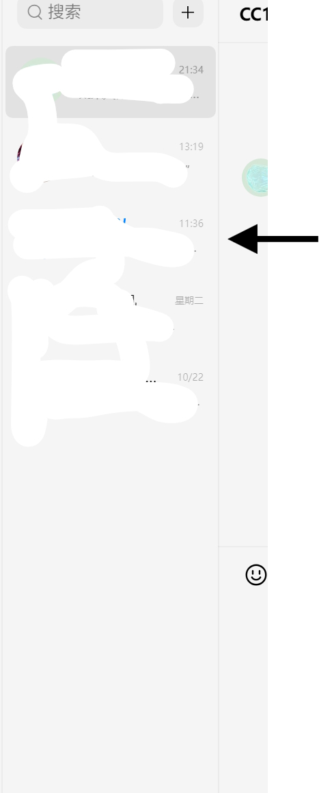

____ ____ _____ _ _ _
/ __ \ / __ \ | __ \ (_) | | | |
| | | | | | | | | |__) | _ | | ___ | |_
| | | | | | | | | ___/ | | | | / _ \ | __|
| |__| | | |__| | | | | | | | | (_) | | |_
\___\_\ \___\_\ |_| |_| |_| \___/ \__|
使用纯视觉 + 窗口自动化实现 QQ 消息自动回复，零 API 依赖、零注入、低封号风险。
QQPilot 是一个全自动的 QQ 聊天机器人，通过以下流程实现智能回复：
复制聊天内容 → 解析消息（含图片/表情包）→ 调用 LLM 生成回复 → 模拟输入并发送
全程 不调用 QQ 内部接口、不 Hook 进程、不注入 DLL，极大降低账号封禁风险。
前往 Releases 页面 下载最新压缩包并解压。
双击运行 安装.exe（需联网）：
pyperclip, requests, ollama, colorama 等Linux用户请参考
安装 Ollama 并拉取模型：
# 推荐主力模型（8B，性能与效果平衡）
ollama pull huihui_ai/deepseek-r1-abliterated:8b
# 低配设备可选（1.5B，轻量快速）
ollama pull huihui_ai/deepseek-r1-abliterated:1.5b
# 视觉多模态模型（实验性，效果一般，慎用）
ollama pull huihui_ai/qwen3-vl-abliterated:latest
💡 强烈建议使用纯文本模型。当前本地视觉模型对表情包/截图理解能力有限，易出错。
如需使用自定义 API（如 OpenAI、Claude、自建 LLM），请在
设置.exe中配置。
运行 设置.exe 配置模型类型、API 地址、截图区域等参数。
.\Images 文件夹run.bat 启动主程序📌 关键提醒：运行期间请勿移动 QQ 窗口或更改 DPI/分辨率！
| 设置项 | 推荐值 |
|---|---|
| 发送消息 | Ctrl+Enter |
| 联系人面板宽度 | 拖动至最窄 |
| 自动更新 | 关闭 |
| 字体大小 | 设为“最小” |
| 聊天背景 | 使用默认白色背景 |
| 系统显示缩放 | 100% 或 125%（避免 150%+） |
| 群 | 关闭右边栏 |
📷 参考图示：


⚠️该程序不支持无头模式（至少外接一台显示器）
Windows 8.1 或更高版本 64位
单核处理器，主频1GHz以上
1GB RAM
350M 可用空间
1920x1080 显示器
对于windows7 可以尝试安装 VkKex
详情见教程
Windows 10ARM64 及以上
1GB RAM
350M 可用空间
1920x1080 显示器

QQPilot在最低配置上成功运行，使用内置语言模型进行回复
Windows 10 x64
4核心，2GHz以上
4GB RAM
8GB 可用空间(用于Ollama)
支持CUDA的GPU
1920x1080 显示器
窗口置顶
通过 FocusqqWindow.dll（Python ctypes 调用）强制将 QQ 主窗口置顶，确保截图一致性。
DPI 自适应
运行 ScaleToINI.exe 自动检测系统缩放比例，并写入 config.ini 用于坐标校准。
未读消息检测
在联系人列表区域扫描“小红点”，定位有新消息的会话。
自动交互
模拟鼠标点击红点位置，打开对应聊天窗口。
内容识别
Username: 11-01 08:12:19
<img src="file://C:/Image.png" />
内容内容内容...
aaaaaaaaaaa: 11-25 08:10:36
普通文字，没有图片
bbbbbbbbbbb: 11-25 08:11:00
<img src="file:///C:/Users/Admin/Pictures/test%20image.png" />
还有这张图！
智能回复生成
将解析后的内容传入本地大模型（如 Ollama）或自定义 HTTP API，生成自然语言回复。
自动发送
.\Images 中的表情包 （Linux不支持）会话清理
发送完成后自动关闭当前聊天窗口，返回主界面继续监听。
本项目基于 Python 3.13 开发，依赖见 requirements.txt。
使用 Visual Studio 2022 或 2026 打开并编译以下解决方案（仅Windows）：
VisionQQ_C.slnx本软件 仅限技术学习与研究用途，严禁用于：
使用者须自行承担因使用本软件引发的一切法律责任，作者概不负责。
本项目采用 MIT License。欢迎 Star ⭐、Fork 🍴 与贡献代码！
让我们一起打造更安全、智能的视觉自动化工具！